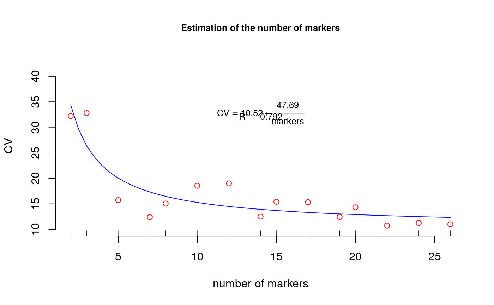

resampling.cv.RdThis process finds the curve of CV for a different number of markers which allows us to determine the number of optimal markers for a given relative variability. A method of the curvature.
resampling.cv(A, size, npoints)
| A | data frame or matrix of binary data |
|---|---|
| size | number of re-samplings |
| npoints | Number of points to consider the model |
lm(formula = CV ~ I(1/marker))
Table with variation coefficient by number of markers
Efron, B., Tibshirani, R. (1993) An Introduction to the Boostrap. Chapman and Hall/CRC
library(agricolae) #example table of molecular markers data(markers) study<-resampling.cv(markers,size=1,npoints=15)#> #> Time of process ... 2.018139#> #> Call: #> lm(formula = CV ~ I(1/marker)) #> #> Residuals: #> Min 1Q Median 3Q Max #> -4.930 -1.686 -1.249 1.870 6.383 #> #> Coefficients: #> Estimate Std. Error t value Pr(>|t|) #> (Intercept) 10.515 1.209 8.698 8.85e-07 *** #> I(1/marker) 47.687 6.775 7.039 8.81e-06 *** #> --- #> Signif. codes: 0 ‘***’ 0.001 ‘**’ 0.01 ‘*’ 0.05 ‘.’ 0.1 ‘ ’ 1 #> #> Residual standard error: 3.281 on 13 degrees of freedom #> Multiple R-squared: 0.7922, Adjusted R-squared: 0.7762 #> F-statistic: 49.55 on 1 and 13 DF, p-value: 8.813e-06 #>coef<-coef(study$model) py<-predict(study$model) Rsq<-summary(study$model)$"r.squared" table.cv <- data.frame(study$table.cv,estimate=py) print(table.cv)#> marker CV estimate #> 1 2 32.22113 34.35873 #> 2 3 32.79360 26.41083 #> 3 5 15.73968 20.05251 #> 4 7 12.39719 17.32752 #> 5 8 15.07412 16.47596 #> 6 10 18.54876 15.28378 #> 7 12 19.00815 14.48899 #> 8 14 12.50055 13.92128 #> 9 15 15.42278 13.69420 #> 10 17 15.33190 13.32018 #> 11 19 12.43647 13.02490 #> 12 20 14.33746 12.89941 #> 13 22 10.73170 12.68264 #> 14 24 11.25340 12.50201 #> 15 26 10.99521 12.34917# Plot CV #startgraph limy<-max(table.cv[,2])+10 plot(table.cv[,c(1,2)],col="red",frame=FALSE,xlab="number of markers", ylim=c(10,limy), ylab="CV",cex.main=0.8,main="Estimation of the number of markers")ty<-quantile(table.cv[,2],1) tx<-median(table.cv[,1]) tz<-quantile(table.cv[,2],0.95) text(tx,ty, cex=0.8,as.expression(substitute(CV == a + frac(b,markers), list(a=round(coef[1],2),b=round(coef[2],2)))) )# Plot CV = a + b/n.markers fy<-function(x,a,b) a+b/x x<-seq(2,max(table.cv[,1]),length=50) y <- coef[1] + coef[2]/x lines(x,y,col="blue")#endgraph